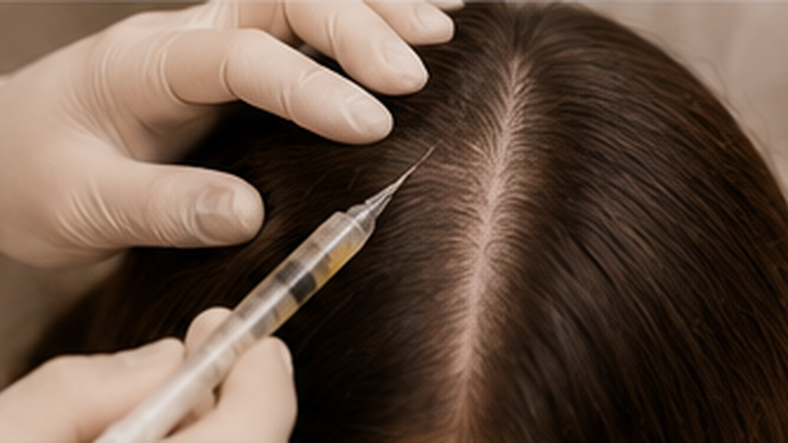

JOURNAL Cabelo e couro cabeludo
Afinamento capilar e fotografias: como registrar mudanças sem tirar conclusões rápidas
Afinamento capilar e fotografias parece uma questão simples quando aparece em uma busca.

Para que servem as fotografias — e para que não servem
Fotos podem ajudar a perceber uma mudança ao longo do tempo e a explicar uma preocupação durante a consulta. Elas não identificam a causa, não medem sozinhas a saúde dos folículos e não substituem história clínica nem exame do couro cabeludo. Uma imagem mais clara ou mais escura também pode resultar de luz, penteado, comprimento, oleosidade ou distância da câmera.
A avaliação de queda ou afinamento começa com o padrão e o tempo da mudança, histórico e exame. Uma profissional de saúde pode considerar exames adicionais conforme o que encontra; nenhuma sequência de fotos decide isso por conta própria.
Como fazer comparações menos enganosas
- Registre a data e use, quando possível, o mesmo local, iluminação e distância.
- Mantenha o cabelo em condição parecida — por exemplo, seco e sem mudar a risca — e repita ângulos que mostrem a área que preocupa.
- Evite filtros, modo retrato, zoom variável e edição; guarde os arquivos originais.
- Não fotografe diariamente. Um intervalo combinado com a equipe pode evitar que variações normais dominem sua atenção.
- Se uma imagem parecer diferente, repita em condições semelhantes antes de concluir que houve mudança.
Esse é um método pessoal de organização, não um protocolo diagnóstico validado nem uma promessa de resultado.
Anote também o contexto
Ao lado das imagens, registre quando você começou a notar a mudança, se houve queda difusa, áreas localizadas ou quebra dos fios, sintomas no couro cabeludo e acontecimentos relevantes. Mudanças de saúde, parto, cirurgia, dieta, estresse ou medicamentos podem ser importantes para a avaliação. Anote medicamentos e suplementos com seus nomes; não os suspenda por causa de uma foto ou deste artigo.
Leve os registros à consulta em vez de tentar nomear uma alopecia. Fotos de terceiros e comparações com imagens de redes sociais não mostram o que acontece sob a superfície do couro cabeludo.
Quando não esperar por uma comparação fotográfica
Procure avaliação de saúde se a queda for súbita ou persistente, surgirem falhas localizadas, dor ou ardor, inflamação importante, descamação intensa, perda de sobrancelhas ou áreas com aspecto cicatricial. Uma foto pode ajudar a mostrar quando algo começou, mas não deve atrasar a avaliação.
Como isso se relaciona a procedimentos no couro cabeludo
Mesoterapia capilar e MMP são nomes de serviços, não diagnósticos para a causa da queda. Antes de considerar qualquer procedimento, vale esclarecer qual problema foi avaliado, qual produto e via seriam usados, qual evidência se aplica àquela indicação e quem deve investigar sintomas ou padrões que exigem cuidado médico.
Referências e limites
As referências abaixo descrevem como a queda de cabelo é avaliada. Elas não estabelecem um padrão universal de fotografia domiciliar; as sugestões de registro acima servem para organizar a conversa, não para diagnosticar.
Conteúdo educativo. Não substitui avaliação, diagnóstico ou orientação individual. Em Londrina, agende uma consulta para conversar sobre sua preocupação.